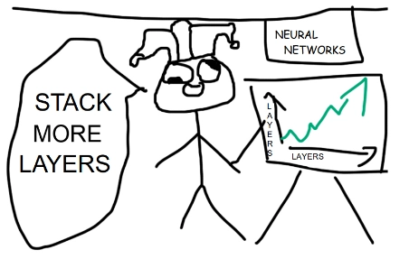

Open-source has you well covered if you’re looking to create an interactive digital assistant or AI VTuber. You can handle dialog generation with any reasonably-sized LLM, speech audio generation with one of the models hovering around the top of Huggingface’s TTS leaderboard and display a humanoid avatar in a Unity app or Web browser using UniVRM or three-vrm respectively. But when it comes to driving the avatar to move and emote in sync to the generated audio your options are limited, especially if you want your solution to worked in realtime with streamed audio.
voice2motion is an MIT-licensed codebase for training models that take in speech audio and outputs 3D avatar animation. The rest of this post explains the decisions that I made in implementing it and how I think it could be better.
Background
Animating a 3D avatar
Your typical humanoid 3D model comes equipped with a posable armature. You can create animations by specifying a sequence of rotations for each bone in the armature and weighting vertices on the mesh to follow the bones. Animations created this way are transferable between models as long as those models have the same set of bones. If you define an animation on the skeleton given by the VRM specification it’ll work for any VRM model.
The VRM spec doesn’t define face bones apart from eyes and jaw. To create expressions animators can use blendshapes (aka “shapekeys”): deformations defined directly on a mesh’s vertices. Unlike skeletal animations, these don’t transfer easily between meshes and must be defined on a per-mesh basis. But for purposes of cross-compatibility between different VR and AR apps contemporary 3D avatars commonly implement the set face blendshapes described in the ARKit spec, which breaks down expressions into 52 gestures like “jawOpen” and “eyeSquintRight”.
Attention is all you need
So a model’s pose and expression can be described with a sequence of 3-tuples for each bone’s rotation ([pitch, yaw, roll]) and scalar values for blendshape value. That’s a vector. And speech can be described with sequence of waveform amplitudes, or better yet a sequence of frequencies, or better yet a learned encoding that efficiently compresses speech content. That’s another vector. And in the past four years machine learning has gotten very, very good as learning mappings from vectors to vectors.
The plan: take a standard Transformer decoder model and train it to output vectors representing a pose and expressions by feeding it encoded speech audio as well as its pose and expression predictions for previous timesteps. To make our lives easier we’ll begin by learning head pose, ignoring other bones in the armature.
Data
The proposed training scheme requires a dataset of paired speech and pose/expression data. The closest existing dataset would be BEAT, but it’s not commercially licensed.
Besides, transformers learn best when trained on lots and lots of data– BEAT is compiled from 3D motion-capture data in a studio setting, which isn’t a procedure that scales easily. But the internet abounds with standard 2D videos of people talking, and these videos can be run through Google’s MediaPipe network to extract pose data and face blendshapes.
I was going to use the test/train split of the AVSpeech dataset to create my own dataset’s test/train split but I got IP banned from YouTube halfway through scraping and revised my split to aggregate whatever I did manage to download. The pretrained checkpoint that I uploaded to Huggingface is a combination of both AVSpeech splits plus the TalkingHead-1KH dataset.
In principle you should be able to run my preprocessing script on any videos containing a single visible speaker, which is great news if you happen to be sitting on a cache of saved Tiktok clips or something. It should also be theoretically possible to fine-tune my network on clips of a single speaker to capture their unique delivery, but I haven’t attempted this yet.
Architecture
It’s just a Transformer decoder. As you can tell from the config, the thing is pretty small: four layers, four heads, hidden dimension of 256.
Small means fast: the network runs at 10x real time on streaming audio on my RTX 3090, with the bottleneck being the speed of the Hubert encoder. But small also means dumb. Ideally the network would learn that the sentence “hey, what’s that to the left” should be accompanied by the avatar looking to the left, but this level of semantic comprehension is improbable in a model with so few parameters.
Transformers scale well. That’s why they’re such a big deal. Improving my network’s performance should be just a matter of

but for some reason when I tried scaling up my network it didn’t yield visible improvement. Maybe because my dataset is too small.
Another purported benefit of transformers is the ability to parallelize training for sequential inference by feeding in the whole target sequence at once and masking future entries in the sequence. When I do this the network over-relies on the ground-truth previous entries and doesn’t learn to utilize the encoded audio at all, so instead I need to get autoregressive with it– my published checkpoint uses ground-truth entries only 20% of the time during training.
How it could be better
Bigger dataset, mostly. I’m fairly confident that a bigger dataset would allow for a larger model and maybe relax the need for sequential training as well.
It’d also be nice to extend the codebase to produce models that predict upper or even whole body movement. It is empirically doable, but not with commercial use or compatibility with 2D video datasets and common 3D avatar formats.